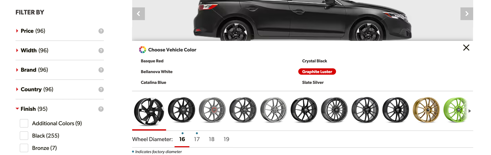

Establish vehicle context
The experience begins with the customer’s vehicle so every wheel is presented in a relevant and recognizable setting rather than as an isolated product.
Wheel shopping is highly visual, but traditional product listings ask customers to make a style decision from isolated product photography. The Wheel Visualizer closes that gap by placing each wheel on the shopper’s vehicle, helping them explore combinations and feel more confident before they buy.
My work focused on making a large catalog of vehicle and product photography feel like a simple, responsive shopping experience—one that supports quick browsing while still providing the details needed to move toward a purchase.
Wheel specifications matter, but they are rarely the first thing a customer wants to understand. The question at the center of the experience is much more immediate: “How will these wheels look on my car?”
A conventional product grid makes that question difficult to answer. Customers have to mentally combine a product image with the shape, stance, and color of their vehicle while remembering options they viewed earlier. That creates unnecessary uncertainty around a purchase that is both expensive and expressive.
The opportunity was to make visual evaluation part of shopping itself. Instead of asking customers to imagine the result, the experience could show them a useful approximation and let them explore alternatives without repeatedly leaving the vehicle view.
The experience
The experience begins with the customer’s vehicle so every wheel is presented in a relevant and recognizable setting rather than as an isolated product.
Customers can move through different wheel designs while keeping the same vehicle view, reducing the effort required to evaluate one option against another.
Color selection makes the visualization feel more personal and improves the customer’s ability to judge contrast, finish, and overall style.
Product information and purchase actions remain available when needed, allowing customers to move from visual exploration into a more detailed buying decision.
The vehicle needed to remain the center of the experience. Product information is important, but allowing specifications, controls, and promotional content to compete with the visualization would recreate the density of a traditional results page.
I used hierarchy and progressive disclosure to keep the primary task clear. The vehicle and selected wheel receive the greatest visual emphasis, frequently used controls remain close at hand, and deeper product details become available when the customer is ready for them.
Positioning the visualizer before the traditional product tiles also changes how customers enter the category. They can begin with recognition and preference—“I like how that looks”—before moving into the technical details needed to validate the choice.

Vehicle color helps customers evaluate each wheel in a more personal and realistic context.
Design principles
Customers often respond to a wheel’s appearance before they investigate its specifications. The interface supports that natural order instead of forcing a technical evaluation first.
Keeping the vehicle visible while products change allows customers to evaluate each option in the same context rather than reconstructing the comparison from memory.
Vehicle, color, and product selections remain connected as customers explore, preventing the experience from feeling like a collection of unrelated screens.
Some customers want to browse for inspiration while others arrive ready to evaluate details and buy. The design gives both groups a clear path forward.
The interface sits on top of a substantial system of vehicle and product photography. Each selection has to coordinate the correct vehicle angle, paint color, wheel finish, fitment, and supporting product information while still responding quickly enough to encourage exploration.
That made consistency especially important. Controls needed predictable selected, available, loading, and unavailable states. The visualizer also had to communicate when imagery or a particular combination could not be shown without making the entire shopping path feel broken.
Responsive behavior required more than shrinking the desktop layout. On smaller screens, the vehicle still needed enough space to make the visualization meaningful, while browsing controls and product actions had to remain reachable without overwhelming the image.
Not every valuable behavior is part of the newest interaction pattern. Analytics showed that some customers continued to use the print feature, whether to review options away from the screen, share them with someone else, or bring a selection into a later conversation.
Rather than removing the feature simply because it felt less modern, we retained it as a secondary action. This kept the primary interface focused while continuing to support a demonstrated customer need.
It was a useful reminder that simplifying an experience does not always mean removing older capabilities. It means giving each capability a level of emphasis that matches its value and frequency of use.
Desktop exploration keeps the vehicle prominent while providing room for browsing and product information.
The mobile design prioritizes the visualization while keeping selection controls within comfortable reach.